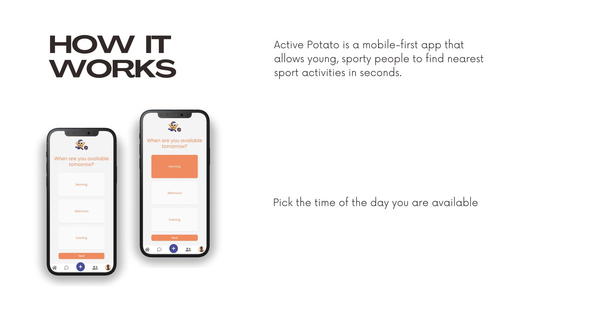
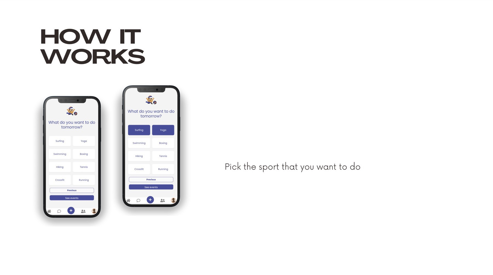
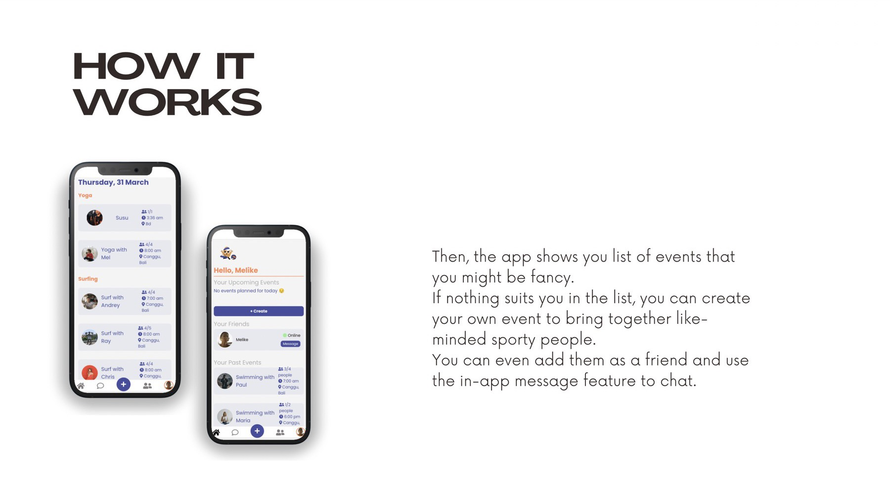
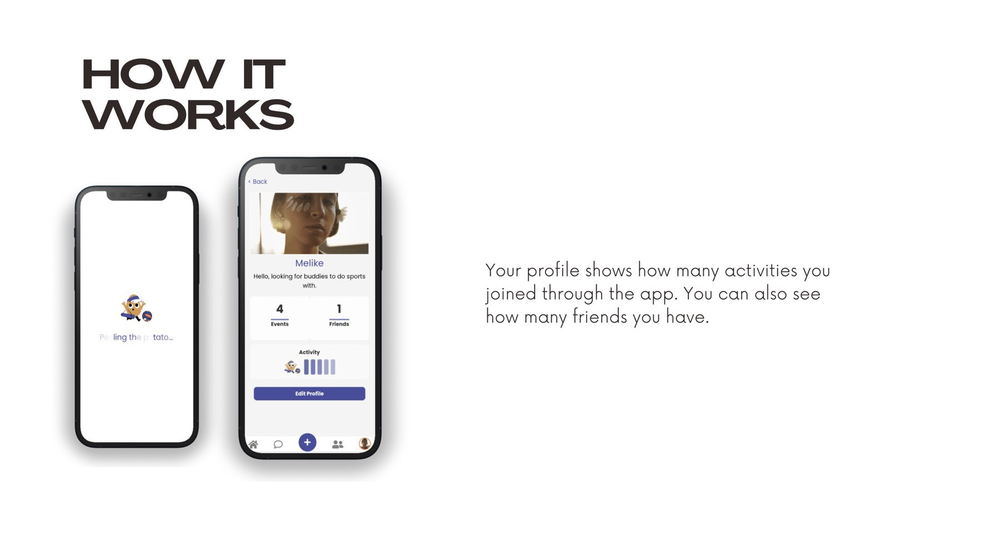

Team project
Active Potato
No way you skip doing sport this time.
A mobile-first web app for sporty people who want company. Pick when you're free and what you want to do, and it shows nearby group activities. You can also create your own event, add people as friends and chat with them in the app.




